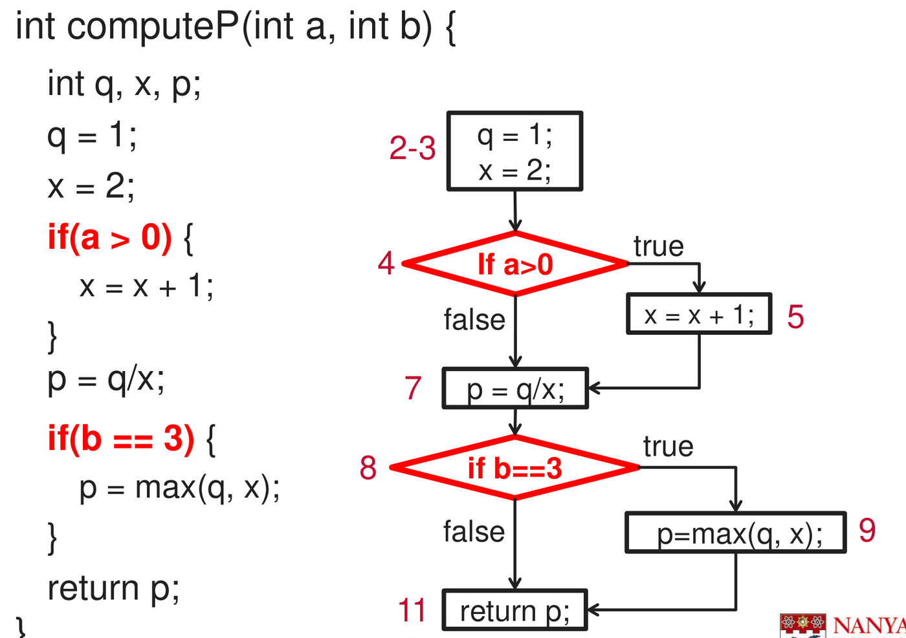
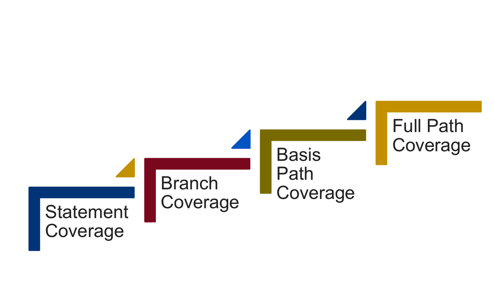
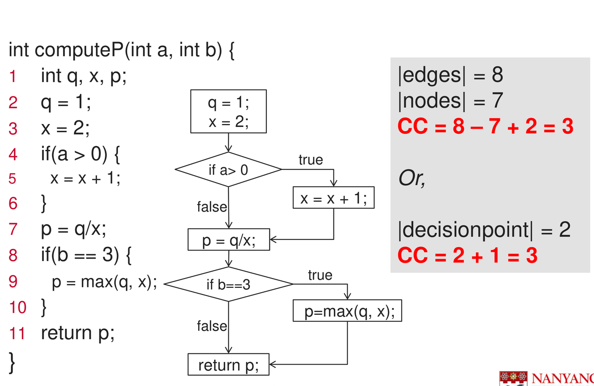

Black-box testing verifies software against external specifications without knowledge of internal code structure. In contrast, white-box testing (structural or glass-box testing) derives test cases directly from the source code implementation. It analyzes control logic, data dependencies, and internal state transitions.
White-box testing is applied primarily at the unit testing level by developers to verify individual functions, methods, and algorithmic branches. Because exhaustively executing every possible path through a program is practically impossible due to loops and combinatorial branch explosions, structural testing relies on rigorous coverage criteria and basis path testing to guarantee that every independent execution path is exercised at least once.
1. Control Flow Graphs (CFG)
A Control Flow Graph (CFG) is a directed graph modeling all execution paths that can be traversed through a program:
- Nodes
():
Represent executable code sequences.
- Process Block: A maximal sequence of statements executed strictly sequentially with single entry and single exit. Sequential assignments, arithmetic operations, and method calls without branches are grouped into a single node.
- Decision Point (Predicate Node): A statement that
alters control flow based on a condition (
if,while,for,switch).
- Edges
():
Directed transfers of control between nodes. Binary decision nodes
produce exactly two outgoing edges labeled
trueandfalse.

Mapping Programming Constructs to Graph Nodes
| Construct | Structural Representation in CFG | Outgoing Edges |
|---|---|---|
Sequence (s1; s2;) |
Single combined process block node. | |
if (cond) { s1; } |
Decision diamond/circle for condition. One edge targets
s1 (true), one edge bypasses s1
(false). Both meet at the subsequent statement. |
|
if (cond) { s1; } else { s2; } |
Decision node with true edge targeting s1
and false edge targeting s2. Both converge at
downstream merge point. |
|
while (cond) { body; } |
Decision node. true enters body, which
loops back to the condition node. false exits the
loop. |
|
for (init; cond; step) { body; } |
init forms a preceding process node. cond
forms a decision node. step executes at the tail of
body before looping back to cond. |
|
switch (expr) { case ... } |
An N-ary decision node with outgoing edges targeting matching case blocks, plus a default exit edge. |
2. Coverage Criteria Hierarchy
Structural testing establishes quantitative thresholds to evaluate test thoroughness. Four ascending tiers of coverage define the testing hierarchy:

| Coverage Criterion | Formal Requirement | Subsumption Hierarchy | Weakness |
|---|---|---|---|
| Level 1: Statement Coverage () | Every executable statement (node) in the program is executed by at least one test case. | Weakest | A single test case can achieve 100% statement coverage for an
if block without an else branch, completely
ignoring the false execution path. |
| Level 2: Branch Coverage () | Every decision outcome (both true and
false edges) is traversed at least once. |
Subsumes | Tests individual decision edges but misses combinations of branches across consecutive decisions. |
| Level 3: Basis Path Coverage | Every linearly independent execution path (basis path) through the CFG is executed at least once. | Subsumes and | Guarantees all statements and decision edges are covered while testing independent branch interactions with minimal test cases (). |
| Level 4: Full Path Coverage | Every distinct path from entry to exit is executed. | Strongest | Infeasible in practice. Any program containing unbounded loops possesses an infinite number of paths. |
[!IMPORTANT] Subsumption Relationship: Achieving Branch Coverage guarantees 100% Statement Coverage. Achieving Statement Coverage does not guarantee Branch Coverage.
3. Cyclomatic Complexity (CC)
Introduced by Thomas McCabe, Cyclomatic Complexity () measures the structural complexity of a program. In control flow testing, defines the number of linearly independent paths through the code, establishing the exact minimum number of test cases required to achieve basis path coverage.

Mathematical Formulas
For any connected control flow graph, can be calculated using three equivalent formulas:
Edges and Nodes Formula: Where is the number of directed edges and is the number of nodes.
Predicate Nodes Formula: Where is the number of binary decision points (predicates such as simple
if,while, orforconditions).Enclosed Regions Formula: Where is the number of enclosed planar regions bounded by edges, plus for the infinite open exterior region:
[!WARNING] Compound Conditions: If a decision condition contains boolean operators (
&&,||), each individual condition represents an independent binary decision. In strict basis testing, increments for each sub-condition:
4. Basis Path Testing Protocol
A basis path (linearly independent path) is any path through a CFG that introduces at least one edge not traversed by any previously identified basis path. The set of all basis paths forms a basis spanning the entire execution space.
Step-by-Step Derivation Protocol
- Construct the CFG: Number all statements. Group sequential non-branching statements into single nodes. Represent each decision as a branching node. Connect control transfers with directed edges.
- Compute Cyclomatic Complexity (): Evaluate . The resulting integer specifies exactly how many basis paths must be found.
- Select a Baseline Path: Choose a typical, clean through-path from entry to exit representing default program execution (e.g. executing loops zero or one time, following standard valid logic).
- Derive Remaining
Basis Paths by Decision Inversion: Systematically retrace the
baseline path and invert the outcome of each decision point one by one:
- Path 2: Invert the outcome of the first decision point; follow baseline logic for all subsequent decisions.
- Path 3: Invert the outcome of the second decision point; follow baseline logic elsewhere.
- Path : Invert the outcome of the -th decision point. Each new path introduces at least one previously unvisited edge, preserving linear independence.
- Handling Loops: Loops introduce cycles. To prevent combinatorial explosion when generating basis paths, execute loops zero times (bypassing the loop) and exactly once (entering and exiting the loop).
- Construct Test Cases: For each basis path, identify concrete input values that force execution along that path, and record the expected output (oracle).
[!TIP] Feasible vs. Infeasible Paths: A mathematically derived basis path may be executionally infeasible if internal variable dependencies prevent a specific combination of conditions from occurring simultaneously. If an infeasible path occurs, testers replace it with an alternative independent path that is executable.
5. Official Tutorial Problems
Tutorial 9 Q1: Control flow graph, cyclomatic complexity, coverage, and basis path testing
Question: A Java method to compute the sum of is shown in the code below:
public int sum(int n, int upperbound){
1 int result, i;
2 result = 0;
3 i = 0;
4 if(n < 0) {
5 n = -n;
6 }
7 while(i<n && result <= upperbound){
8 i = i + 1;
9 result = result + i;
10 }
11 if(result <= upperbound){
12 System.out.println("The sum is " + result);
13 } else {
14 System.out.println("The sum is too large!");
15 }
16 return result;
} - Draw the corresponding control flow graph for the
sum(int n, int upperbound)method. - Calculate the Cyclomatic Complexity of the
sum(int)method. - Design test cases to achieve 100% statement coverage and 100% branch coverage.
- List the basis set of linearly independent paths, along with a test case (input parameters) and expected outcome for each path in the basis path set.
Solution:
Part (a): Control Flow Graph Construction
Group sequential statements into process blocks and map decisions to branching nodes:
- Node 1 (Statements 2–3):
result = 0; i = 0;(Initialization block) - Node 2 (Statement 4):
if (n < 0)(Binary decision 1) - Node 3 (Statement 5):
n = -n;(True branch of decision 1) - Node 4 (Statement 7):
while (i < n && result <= upperbound)(Loop decision 2) - Node 5 (Statements 8–9):
i = i + 1; result = result + i;(Loop body) - Node 6 (Statement 11):
if (result <= upperbound)(Binary decision 3) - Node 7 (Statement 12):
System.out.println("The sum is " + result);(True branch of decision 3) - Node 8 (Statement 14):
System.out.println("The sum is too large!");(False branch of decision 3) - Node 9 (Statement 16):
return result;(Exit node)
Edges ():
-
[
true] -
[
false] -
[
true] -
[
false] - [loop back edge]
-
[
true] -
[
false]
[ 1: Init (result=0, i=0) ]
│
▼
[ 2: if (n < 0) ]
/ \
true / \ false
▼ │
[ 3: n = -n ] │
\ │
\ │
▼ ▼
[ 4: while (i<n && result<=upperbound) ] ◄──┐
/ \ │
true / \ false│
▼ │ │
[ 5: i++; result+=i ] ─────────────────────┘ │
▼
[ 6: if (result <= upperbound) ]
/ \
true / \ false
▼ ▼
[ 7: print sum ] [ 8: print too large ]
\ /
\ /
▼ ▼
[ 9: return result ]Part (b): Cyclomatic Complexity Calculation
Using the standard connected-graph formulas:
Edges and Nodes Formula:
Predicate Nodes Formula: The code contains 3 binary decision statements (Node 2:
if, Node 4:while, Node 6:if):
(Note: If the compound predicate in while is
decomposed into two individual decisions i < n and
result <= upperbound,
.
At statement-level abstraction,
.)
Part (c): Test Cases for 100% Statement and Branch Coverage
To achieve 100% Statement Coverage (), every node (1 through 9) must be executed at least once:
- Node 3 (
n = -n) requires . - Node 5 (loop body) requires loop execution ().
- Node 7 requires upon loop termination.
- Node 8 requires upon loop termination.
To achieve 100% Branch Coverage (), all true and false decision edges must be traversed:
- Node 2: both
true() andfalse(). - Node 4: both
true(loop enters) andfalse(loop terminates/skips). - Node 6: both
true() andfalse().
Minimal Test Suite for 100% Statement and Branch Coverage (2 Test Cases):
| Test Case | Inputs (n, upperbound) |
Path Traversed | Nodes Covered | Branch Edges Covered | Expected Output |
|---|---|---|---|---|---|
| TC-1 | n = -2, upperbound = 10 |
1, 2, 3, 4, 5, 6, 7, 9 | , , , | Prints: "The sum is 3"Returns 3 |
|
| TC-2 | n = 2, upperbound = 1 |
1, 2, 4, 5, 6, 8, 9 | , , , | Prints: "The sum is too large!"Returns 3 |
Coverage Check:
- Statement Coverage: TC-1 executes nodes {1, 2, 3, 4, 5, 6, 7, 9}; TC-2 executes node {8}. All 9 nodes are executed .
- Branch Coverage: Both branches of Node 2, Node 4, and Node 6 are traversed .
Part (d): Linearly Independent Basis Paths and Test Suite
Because , exactly linearly independent basis paths span the CFG:
- Path 1 (Baseline — False at all decisions where
possible):
- Path:
- Inversion logic: (false at 2), loop condition false initially (false at 4), (true at 6).
- Test Input:
n = 0,upperbound = 5 - Trace: loop skipped (). Line 11: (true).
- Expected Output: Prints
"The sum is 0", returns0.
- Path 2 (Invert Decision 1 — True at Node 2):
- Path:
- Inversion logic: (true at 2, executes node 3: ). Loop executes once (). Exits loop, (true at 6).
- Test Input:
n = -1,upperbound = 5 - Expected Output: Prints
"The sum is 1", returns1.
- Path 3 (Invert Decision 2 — Loop Executes multiple
iterations):
- Path:
- Inversion logic: , loop executes with , terminates with .
- Test Input:
n = 2,upperbound = 5 - Trace: ; . Exits loop, (true at 6).
- Expected Output: Prints
"The sum is 3", returns3.
- Path 4 (Invert Decision 3 — False at Node 6):
- Path:
- Inversion logic: Loop terminates because , forcing false branch at Node 6 (node 8).
- Test Input:
n = 2,upperbound = 2 - Trace: Iteration 1: . Iteration 2: . Loop condition is false exits. Line 11: is false executes Node 8.
- Expected Output: Prints
"The sum is too large!", returns3.
Each basis path introduces at least one edge unvisited by prior paths, completely exercising the program logic.
6. Control Flow vs. Data Flow Testing
While control flow testing derives paths based purely on execution control branches, data flow testing focuses on variable lifecycles:
| Dimension | Control Flow Testing | Data Flow Testing |
|---|---|---|
| Primary Driver | Branching structure, decisions, and loop constructs. | Variable definition and variable usage points. |
| Core Abstraction | Control Flow Graph (nodes = statements, edges = flow). | Def-Use Pairs (DU pairs: where variable is defined vs where used). |
| Coverage Goal | Statement, Branch, or Basis Path coverage. | All-Defs, All-Uses, or All-DU-Paths coverage. |
| Defect Detection | Missing branches, unreached statements, incorrect loop bounds. | Uninitialized variables, dead variables (defined but never read), overwritten variables. |